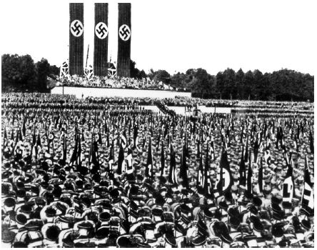

公共事务纪录片依靠新闻报导的专业性来彰显其权威性，而以另一种截然不同的方式彰显其权威性的是政府宣传纪录片——这类影片是全世界的纪录片人获得资金和训练的重要渠道，也时而会强有力地影响公众的观点。
宣传纪录片的制作目的，是为了让观众相信一个组织的观点或者事业。这些影片推销的不是制作人的信念，而是某个组织的事业，当然也有某些制作人自己就全心全意地支持这项事业。虽然这样的作品可以出自任何人之手，包括广告商和激进分子，但“宣传”这个词更常常和政府联系在一起。纪录片之所以对政府来说很重要，正是因为它宣称自己逼真而忠实地表现了现实生活。宣传纪录片地位最重要的时期，是在第二次世界大战及其前后，那时电影是最主要的视听媒体。
自从有电影开始，政府就用纪录片来影响公众观点。在第一次世界大战中，当战事升级为“全面战争”时，各国政府开始用各种媒体来激励自己的军队、动员自己的民众，也让他国政府相信自己的力量。英国纪录片《索姆河战役》（1916）就是一个著名的例子，该片在英国影院上映时大获成功，很大程度上是因为影片中有真实的战斗画面。
第一次世界大战之后，全世界的政府开始将纪录片视作一个新的、强有力的工具。德国纳粹党1933年上台之后，牢牢控制了所有电影的制作、发行和放映。纳粹党的政治合法性直接通过宣传来强化。日本政府1933年也通过了一项法律，要求纪录片制作人遵从政府的路线，要求每家剧院的电影场次安排中都要有纪录片。第二年，日本政府强制合并了几家最大的新闻电影公司，以促进信息传达的一致性，从而促进国民行为的统一化。新生的苏联政府也将一切媒体国有化，为政府的目标服务。20世纪20年代的苏联曾经有过波澜壮阔的艺术运动，这从济加·韦尔托夫的职业生涯就可以看出，但后来这一运动就土崩瓦解，被严厉的斯大林式社会主义现实主义所取代。
美国和英国都成立了一些宣传机构，但这些宣传机构需要与商业制片机构、发行机构和放映机构进行协调，才能够把信息传达给本国的公民，军队除外。英国成立了信息部，但从一开始就因为政策上的矛盾而问题重重。美国的战争信息办公室从来没有得到过罗斯福总统的全面支持，而陆海空军却都控制着自己的宣传片制作。美国的政治宣传片制作也遭到了来自好莱坞的抵制，好莱坞的电影制片厂阻挠生产一切会影响到它们生意的政府宣传片。
在英国，格里尔森的团队制作了一些批评家们最为重视也感到困扰的纪录片。巴兹尔·赖特的《锡兰之歌》（1934）就是一个很好的例子。片子不仅以浪漫的方式展示了英国最重要的茶叶来源地之一——锡兰的前殖民时代生活，而且赞颂了一个令人惊叹的工业过程，正是这一过程让茶得以出现在英国人的厨房里。正如威廉·吉内所指出的，这为品茶这一行为增添了光环，让品茶成为一种向往异域文化的怀旧行为，同时又赞颂了英国的活力与强大。
罗斯福的“新经济政策”以新的政府行为介入公民的生活——从资金投入和干预程度上来说都是惊人的——来缓解经济危机，这一改变需要说服民众。各种不同的政府机构雇用了很多纪录片人，其中很多都是之前制作煽动性纪录片的激进派艺术家。这些机构中最大的是再安置局，该局的作家和分析家佩尔·洛伦茨制作了几部享有盛誉的纪录片。
洛伦茨对国家的目标深信不疑，并努力用艺术化的作品为这些目标服务，就如同英国的格里尔森和苏联的韦尔托夫一样。他的作品体现了来自欧洲和苏联艺术家的不同观点的影响。这些作品把声音作为独立的元素，而不仅仅是背景；它们利用视觉和听觉诗歌让观众产生联想；它们让人想起了城市交响曲纪录片的结构。洛伦茨的每一部影片都在制作人常常较为激进的分析和官方的指令之间寻求平衡。威廉·亚历山大称洛伦茨将社会评论，尤其是指名批评贪婪资本家的评论变得温和了。
《开垦平原的犁》（1936）以鼓励公众支持再安置局（后来的农业安全局）的救济计划为使命。这部作品带着反思的目光，回顾了民众的行为使中部平原地区生态平衡遭到破坏，从而导致大规模移民的过程。好莱坞电影圈拒绝向洛伦茨提供电影脚本，主要院线发行商也拒绝在其影院放映该片，但独立影院却播放了该片，并造成了一定的影响。影片《河流》（1937）则通过展示密西西比河的破坏力，以诗意的方式提出政府应当对水资源管理和保护进行干预。洛伦茨有时将这一影片称为一部“歌剧”。派拉蒙电影公司发行了该片，并获得了利润，但各种电影制片厂仍然对政府制作的电影怀有敌意。
由于其大胆的艺术实验，洛伦茨制作或监制的纪录片成为电影专业学生的经典教材。对于历史学家来说，这些纪录片很有魅力，因为它们捕捉到了全世界政府——无论其目的是崇高还是邪恶——一夜之间开展改造社会和自然的巨大工程的时刻。
不同的目标，迥异的风格
如果我们比较三部不同的政府宣传纪录片，就可以发现由于政府命令、文化背景和艺术家本人的不同，宣传片的风格也会不同。本节中提到的三位纪录片制作人选取了三种不同的风格，来应对用现实塑造观众的意识形态这一挑战。
德国纪录片制作人莱尼·里芬施塔尔的《意志的胜利》（1935）代表性地阐释了纳粹电影宣传的目标：将希特勒和整个民族融为一体，将纳粹党以及后来的整个国家表现为一股整体的、团结的、不可战胜的力量。纪录片只是达到这一目标的众多采取象征性手段的工具之一。里芬施塔尔将这样的象征性力量运用得淋漓尽致，其用意在于鼓舞支持者、震慑他人，比如外国的敌对势力。
《意志的胜利》由德国国家电影制片机构“乌发电影公司”出资拍摄，记录了1934年的纳粹党代表大会。在精心的剪辑下，影片将一个本来已经很声势浩大的事件再现得更加轰轰烈烈。影片从视觉上将希特勒神化——开场的镜头就是他乘飞机从云中抵达。影片将德国人再现为一个纪律性极强的、对希特勒极度崇拜的群体，他们的行动只有一个目的：为这个国家的化身希特勒服务。影片拍摄了希特勒的崇拜者欢乐的脸庞、让人敬畏的人潮涌动的场面，运用了高亢兴奋的音乐，展现了一个个男女老少做着同样的动作、分享着同样的情感的画面。用弗兰克·托马苏洛的话来说，通过这些手段，这部纪录片让政治上的统一变得正面而性感。虽然影片记录的是一次政治会议，却很小心地避开了政治上的争论。电影展现的，是归属感和参与一项重大的历史性事业所带来的激动。
第二次世界大战开始后，英国人面临着与德国人完全不同的困境。“人民的战争”需要动员群众来打赢，但英国却在第一次遭受进攻时就几乎已经输掉了战争。英国人需要对自己的抵抗力更有信心。英国的政府宣传刚开始时很不连贯，以说教为主，且审查严格，但后来却因诚实和表现真相而闻名——向英国人呈现真正的事实、真正的战场画面、真正的战争新闻和真正的人物。
格里尔森的团队制作了几十部这样的纪录片。或许其中汉弗莱·詹宁斯的《倾听不列颠》（1942）最好地体现了英国政府的宣传方法，即歌颂普通民众在重压下捍卫自己文化的能力。这名来自社会上层的艺术家制作了好几部著名的战时纪录片，其共同的显著特征就是注重刻画微小而生动的细节。《倾听不列颠》和其他作品，都是他和才华横溢的电影编辑斯图尔特·麦卡利斯特一起制作的。
《倾听不列颠》是一首视觉诗，捕捉了在时刻防备飞机和炸弹的情形下，英国日常生活中的一些瞬间。随着摄像机镜头穿过大街小巷来到室内，观众好像不经意间听到了日常生活中那些绵延不绝的声音——孩子们在庭院里跳舞，救护人员合唱一首传统的歌谣，一场上流社会的音乐会正在进行，一位美国大兵在教盟国军队的人唱《牧场是我家》。拿着公文包的男人们穿过轰炸过后瓦砾遍布的街巷去上班，女人们则是毫无怨言地承担起了放哨的任务。
一些人认为，詹宁斯在片中暗讽了阶级界限分明的英国在战争的威胁下愉快团结起来的神话，另一些人则认为他巧妙地利用对比鲜明的形象指出了英国阶级关系紧张的现实。不论以何种方式解读，詹宁斯创作的这部极受欢迎的短纪录片都让英国人达成了一种共识：为了胜利，他们应当毫无怨言地做任何事情，而且在这一过程中并不需要放弃自己原有的身份。相对于他想传达的信息来说，他的方法是相当适宜的。他让影片看起来一点都不像政府宣传，以此让人们卸下防备。
此时的美国则面临着另一种不同的挑战。联邦政府之前并没有独立的宣传部门或纪录片制作部门。美国很晚才加入第二次世界大战，直到日军轰炸珍珠港之前，很多美国人都反对支持盟军。不仅如此，很多被动员参军的年轻人都来自农场或小城镇，受教育程度很低；他们不理解自己为何应该冒着丧命的危险参与战争。
美国战争宣传片的标志性作品是《我们为何而战》（1943）系列，由好莱坞知名导演（同时也是一位来自西西里岛的移民）弗兰克·卡普拉为陆军的信息和教育部门制作。影片的宣传对象是孤立主义者和无知者。这一由美国陆军授意制作的系列片共分八集，主要向军人们解释美国为何会参与到这场战争中来。卡普拉借鉴了美国通信部队制作的宣传片，并自如地运用了他的好莱坞背景。他的最重要法宝，在于借鉴了其他国家宣传片制作人的作品——特别是里芬施塔尔的作品。他将好莱坞电影里的画面（在战胜了片场的抵制之后）、迪士尼片场的动画地图、美国陆军的影像资料，以及敌人的宣传结合起来，描绘出当前危险的态势。里芬施塔尔让德国观众震慑的那种能力经过美国人的重新创造，呈现为一种警示的声音。
《我们为何而战》系列片以强烈的说教性和饱满的情绪，力证美国应当参与这场战争。该片借鉴了不少流行文化媒体，如报纸、电台和当时美国年轻人最主要的媒体食粮——电影，其风格是自鸣得意、信心满满，甚至有点自以为是。有关政治的论点则被简化，有时到了制造假象的地步。比如，片中没有提及种族隔离正在悄悄侵蚀美国民主的美好画面。卡普拉将他标志性的、对“美国式生活”的民粹主义情结带入了影片中。影片将当前的政治危机置于美国民粹主义和民主价值观的背景下，融入小城镇、小社区的生活来展现。影片明显的政治信息是由军方人员所设定的，卡普拉本人几乎没有决定权。
这三位纪录片制作人采取了三种截然不同的形式——令人眼花缭乱的大场面、精心设计的低调陈述、直截了当的说教；他们的作品反映了不同的文化背景和政治任务。但这三位纪录片制作人又都有一个共同的核心策略：将眼前的危机和可被观众视为自身传统价值观和文化传承的东西联系起来。
有效性
宣传纪录片有效果吗？尼古拉斯·雷韦斯从大量的媒体效果研究文献中得出，这些纪录片和政府的其他宣传工作一样，有时能增强民众信念，在这种情形下它们可以说是成功的；但宣传纪录片在改变公众观点方面从未有过明显作用。说某一部宣传片有着毒化或控制观众的力量，这在哪里都显得言过其实。但同时，每部纪录片又构成了政府说服民众和制定目标的一部分，给人们制造一种期待，逐步地改写人们脑海中对于正常事物的概念。
宣传纪录片也缺乏商业故事片的那种吸引力。第二次世界大战期间，宣传纪录片通常在电影院以外的地方播放。在日本，纪录片被强制推行，战时研究却显示相对很少有女性对纪录片感兴趣。在德国，虽然希特勒政权大张旗鼓地将《意志的胜利》推销给影院老板们，但影院常常只会上映一个星期，因为观众太少。当时经济形势的恶化和纳粹的反犹极端主义导致公众产生了不满和警觉，这部影片似乎也未能缓和民众的意见。《意志的胜利》的成就也许体现在民意调查反映不出的更深层次：它将新政党纳粹党与深层的文化和历史传统联系起来。

图8 《意志的胜利》不仅成为纳粹的宣传工具，当被剪接入盟国的宣传影片时，也成了盟国的宣传工具。莱尼·里芬施塔尔导演，1935年
在英国的影院，比起针对时事的、说教的宣传片，以“人民的战争”为主题的纪录片卖座更久。由汉弗莱·詹宁斯导演、1940年上映的纪录片《伦敦能坚持下去》是此类纪录片第一次在票房上获得成功。影片以一位美国记者的报道为线索，背后的主题是德国人无法“消灭伦敦人民不可战胜的精神和勇气”。另外一部受到观众欢迎的片子是《倾听不列颠》，但这样的情况并不多见。有了16毫米的播放设备以后，纪录片也被带到影院以外的地方，为有组织的群体放映。
在美国，几乎每个身在国内或国外的士兵都看过卡普拉的系列纪录片。研究表明，在刚刚观看过电影以及一段时间以后，士兵原有的观点均受到了影响。
影片简单直接地赞扬盟国，因此也很受英国和苏联政府的欢迎，两国政府都要求国内的影院播放这一系列纪录片。在美国的电影院里该系列片却没那么成功。影院老板不愿意放映《我们为何而战》，部分是因为纪录片一向不叫座，还有就是因为片中用了很多观众在电影院里看过的画面，特别是新闻短片中的镜头。
对于能识别出的宣传鼓动，观众不会轻易缴械。《意志的胜利》之所以能被许多人如此有效地用于反宣传，正是因为其中体现出对观众的强大控制。它从视觉上象征了用意志去战胜和摧毁的行为。《倾听不列颠》受到观众厚爱的一个原因，是它给观众留下了这样的印象：它并没有要控制观众的思想，只是邀请他们来观察现实。
宣传片带来的效应可能会是完全意想不到的，里芬施塔尔的作品被其他纪录片使用就说明了这一点。美国的好莱坞导演约翰·休斯顿为美国军队制作了一部战时电影《圣彼得罗战役》（1945），目的是为了让美国人知道对意大利的那场高伤亡率作战是必需的。由于画面过于惨烈，政府决定不在战争期间放映该片，害怕引起公众恐慌；不过在战争结束后政府又改变了决定。该电影及其独特的战斗画面，此后却被很多人，特别是反战激进人士用来展示战争给人类带来的惨痛代价。
岩崎昶的作品，引用埃里克·巴尔诺的话来说，是一个关于宣传纪录片被利用和封杀的讽刺故事。第二次世界大战期间，岩崎昶被迫为日本政府制作纪录片，因此拥有所需的设备和技术，将广岛和长崎遭受轰炸后的景象记录下来。但是战后占领日本的美国军政府却将其作品没收并对外保密。
当作品解密之后，埃里克·巴尔诺制作了一部简短却有震撼力的作品《广岛——长崎，1945年8月》。岩崎昶看到这部作品时，才第一次在银幕上看到自己当年拍摄的脚本。
伦理道德
如果说纪录片承诺向观众诚实地再现现实，那么一个诚实的制作人是否能够制作宣传片，并郑重其事地将其称为纪录片？许多广播电视记者会认为和政府合作无异于自毁职业生涯。同样，独立制片人也非常看重自己的自主性，不愿受政府命令和审查的约束。与此同时，许多电影制作公司却靠为政府提供培训和宣传纪录片为生，虽然这通常会被认为很不光彩。
第二次世界大战期间的纪录片制作人常相信他们不仅有权利，而且有义务制作宣传片。约翰·格里尔森认为知识分子有义务为一个强大、团结却仍然开明的社会而工作。正如他曾解释的：“简单地说，宣传就是教育 。我们影片中的‘操纵’将审美与民主改革的构想融为一体。我们是受雇于策划者的推销员。我们帮每个人孕育关于一个社会的生动构想，而这个人则有幸服务于这个社会。”对电影人来说，妥协既是一种残酷的现实，也是一种荣幸。一次，他解释为何自己为政府制作的电影中没有阶级斗争时说：“制作电影的第一条准则，就是别得罪拿着钱包的人。”
弗兰克·卡普拉并不因为美国陆军工作而感到不妥，虽然他常常遇到各种困难并为此恼火，而军方各部门的要求相互冲突，也常让他备感挫折。卡普拉自豪地将自己的才能投身于反法西斯的事业，这和其他的好莱坞领军人物大同小异，他们中有些人有左翼的政治信仰，还有些人认为法西斯主义是未来更公平社会的主要威胁。
电影制片人兼剧作家斯图尔特·舒尔贝格则在战后出品了一系列纪录片向欧洲推销马歇尔计划。
另一方面，在失败的这一方，莱尼·里芬施塔尔在第二次世界大战后的去纳粹化运动中蹲了四年监狱，她发现自己与希特勒的联系使她的余生沾上了污点。她试图分辩自己只是制造艺术而非宣传，她只是在被迫的情形下拍摄宣传片。她于2003年去世，时年101岁，她生前一直坚称：自己从未成为纳粹党员；她当时别无选择，只能为希特勒工作；她只是在那种情形下尽可能地制作出了最优美的作品。
留下的财富
宣传片，或者叫做虚假信息、公共外交、战略沟通，现在仍然是各国政府的重要工具。但单独的纪录片已经不再是针对普通大众的公关活动的重要部分。不过，政府宣传却一直是纪录片人关注的目标；比如电视公共事务纪录片《五角大楼的推销术》。由杰恩·洛德以及凯文·拉弗蒂和皮尔斯·拉弗蒂兄弟拍摄的《原子咖啡厅》（1982）也是一例，该片讽刺了政府对于核时代的宣传。罗伯特·斯通的《比基尼电台》（1987），则讲述了美国政府针对第一颗氢弹爆炸所进行的非同凡响的公关战。
战争期间发展起来的政府宣传机构，在和平时代羽翼渐丰。加拿大国家电影局就是从一项战时的事业发展起来的。日本政府对第二次世界大战宣传片的支持，也大大扩充了这一行业的能量，为战后私人投资的电影制作作好了准备。
纪录片对于一个时代的人来说是宣传，对于另一个时代的人来说就是宝库。
新闻短片、纪录片、培训资料和其他实况资料等丰富的档案录像，成为后来电影和电视纪录片专辑的资源。比如，美国电视系列纪录片《海上雄风》（1952——1953）用了很多海军纪录片的影像资料。有线频道播出的第二次世界大战题材的纪录片，有赖于公共领域的第二次世界大战时期的政府录像资料。对美国政府的录像资料进行编目和检索的私人产业方兴未艾。互联网影像档案库Prelinger Archives让公众可以从网上免费下载数字化的政府录像。
虽然纪录片已经不再是政府宣传的首要工具，政府却仍然继续对电影和视频投资，这出于一个完全不同的目的：监管。这种无所不在的监管本身也可以成为纪录片人的素材。在东欧，1989年柏林墙倒塌后，政府录像成为纪录片重新审视历史的原材料。在波兰纪录片制作人彼得·莫拉夫斯基的纪录片《秘密录影带》（2002）中，曾身为秘密警察的纪录片制作人一边回忆自己从前的工作，一边对着画面解说这些画面是从一盒被偶然丢弃的录影带中找回的。影片中制作人对他们从前的工作显然十分怀念，这为该片添上了一丝不易觉察的幽默。在秘鲁，情报部长弗拉迪米罗·蒙特西诺的非法受贿记录，最终被在电视上曝光，为索尼娅·戈尔登贝格的讽刺纪录片《眼间谍》（2002）提供了素材。
纪录片在再现现实时所存在的固有问题，在宣传纪录片这一体裁上暴露得尤为明显。宣传纪录片运用的手段和其他类型的纪录片并无二致。和其他纪录片一样，它们的目的是向观众展示一些自认为是可信的东西；它们所表现的现实总是与某个意识形态相适应，这样的意识形态背景赋予了影片意义。制作这些影片的人并不一定是居心叵测的。实际上，这类影片的制作人常常是爱国者，认为自己在用个人专长为公益作贡献。这些纪录片甚至有可能是真实的，至少展示了制作人自己所认定的真实情况。
宣传纪录片和其他纪录片不同的一点，在于其支持者是国家机构——这些社会机构规定和推行着社会的制度，并最终通过强制手段来确保这些制度得以实行。这些支持机构控制着宣传纪录片所要传达的信息。这些不同让宣传纪录片的意义也有所不同，因为宣传纪录片所刻画的现实背后，有这样一股巨大的力量在操纵。这一类型的纪录片戏剧性地说明：没有一部纪录片是展现现实的透明窗户，所有的意义之所以产生，背后都有其推动力。这一类型的纪录片也提醒我们，研究任何文化表达形式背后的条件相当重要。